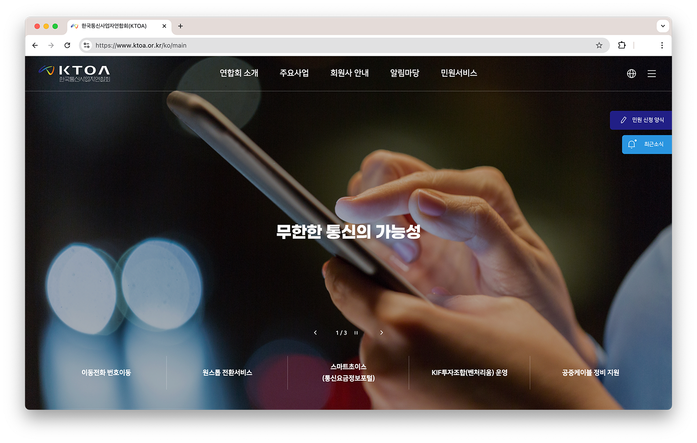

(사)한국통신사업자연합회
2023 - 2024
Overview
팀 이동 후 작업한 첫 프로젝트입니다.
다양한 사업 정보와 최신 활동을 효과적으로 전달하고, 민원인들이 보다 편리하게 이용할 수 있도록 리뉴얼을 진행했습니다.
공통 UI 가이드를 정립하고, 반응형 환경에서도 일관된 UI/UX를 제공할 수 있도록 작업했습니다.
Work Detail
Tech Stack
Tool

공통 UI 가이드 정립의 필요성
이전 운영 업무 시에는 기존 페이지의 요소를 참고해 가져다 붙이는 방식으로 작업하는 경우가 대부분이었습니다.
팀 이동 후 처음으로 구축에 참여하여 초기 단계에 공통 UI 가이드를 직접 정립해 보면서, 잘 정립된 가이드는 구축 단계의 작업 속도를 높여줄 뿐만 아니라 이후 유지보수까지 훨씬 수월하게 만들어준다는 것을 깨달을 수 있어 뜻깊었습니다.
이전 프로젝트
영진약품다음 프로젝트
웹사이트 운영 및 유지보수 경험